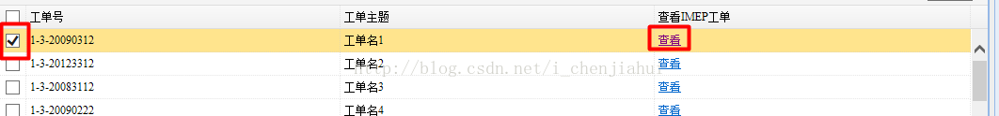
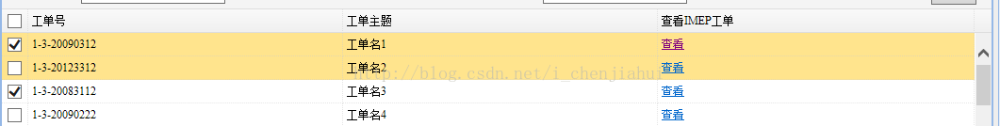

版权声明：本文为博主原创文章，未经博主允许不得转载。 https://blog.csdn.net/i_chenjiahui/article/details/40518473
jquery-easyui的datagrid在checkbox多选时，行选中不对应，去除高亮的解决方法
工作中用到一个具有多选功能的easyui-datagrid在处理cell的点击事件时，不允许被选中行的需求。
如下图，点击“查看”时，只是为了查看详细信息，并不是需要选择行。

完成这个需求，其实只需要将datagrid的checkOnSelect属性设置为false就可以了。
然而，当设置该属性后，新的问题就随之出现了。

目前的办法是使用以下代码去除高亮： （本来是打算处理成checkbox选中的行高亮显示，奈何刚开始使用easyui功力不够）
onSelect:function(rowIndex, rowData){
$('#datagrid2').datagrid('unselectRow',rowIndex);
},
onCheckAll:function(rows){
$('#datagrid2').datagrid('unselectAll');
}
使用以上代码之后，要获取到checkbox选中的所以行数据，则使用以下代码：
var checkedItems = $('#datagrid2').datagrid('getChecked');
开始上面这行代码一直只返回一行数据，后来仔细再看了下，这行代码使用也是有前提的，就是必须指定idField。
若以后想到办法做到checkbox选中的行高亮显示，会继续补充。